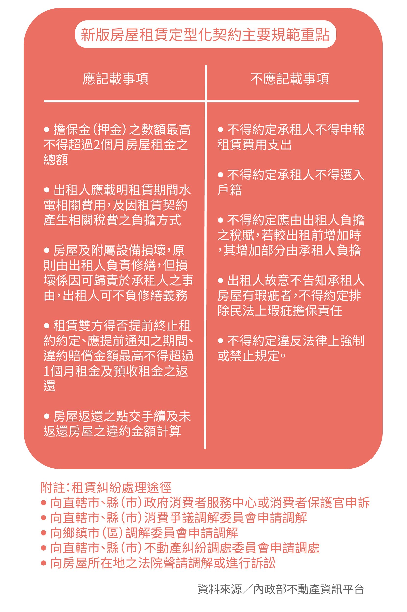

「住」大不易
租屋菜鳥何去何從
【專題記者洪婉恬、葉冠吟、張寧心、黃昰熏、邱麒瑋、陳思慧綜合報導】
根據內政部統計，台灣因居住或就學而有租房需求者，約超過285萬人，相當於全國總人口的八分之一。想要脫離父母自立，找房可說是開啟獨立生活的第一步，無奈雙北房價之高，新鮮人得要不吃不喝十幾年才買得起房，於是只能以租代買。不過，如今租房也大不易，內政部的數據顯示，全台租金指數【註1】已連續上漲超過六年，今年四月更來到104.57%，屢創新高。除了高昂的租金，上網搜尋、找房仲——經歷一連串努力後預約看房，沒想到不是遇到無理要求，就是實際屋況與照片不符，碰了一鼻子灰後轉而找社會住宅，卻又處處碰壁。「住」對於租屋菜鳥來說為何困難重重？除了一般租屋、社會住宅，是否還有其他路徑可供選擇？
盼阻租屋亂象 新版房契上路
不論剛上大學的學生或初出社會的新鮮人，都想為自己尋覓一個溫暖舒適的家，但首次租屋的菜鳥最怕遇上惡房東。近年租屋亂象層出不窮，例如去年在輔仁大學附近鬧得沸沸揚揚的惡房東張淑晶。為遏止類似事件重演，內政部增訂「房屋租賃定型化契約應記載及不得記載事項」，又稱作「張淑晶條款」，以保障租客權益，於今年元旦正式上路。
新版契約書中，特別針對常見的房屋租賃糾紛，例如提前終止租約、房東要求過高押金、臨時調漲水電費、租屋毀損修繕以及房屋歸還違約金額等爭議，都必須明定記載。若房東不遵守，房客能要求房東修改或拒絕簽約。另外，如果經地方政府命令限期改正而未達成的房東，將會依《消費者保護法》裁罰，最高可達30萬元。然而，目前新公告的版本並不能規範所有房屋租賃行為，僅能適用將承租房屋作為住宅使用。也就是說，如果租客將承租房屋作為販賣商品或辦公業務等營業用途，就無法適用於新版規定。另外，新法主要規範以出租為業的職業房東，若是業餘房東，政府僅能宣導、勸導，盼他們能遵守新版標準。
崔媽媽基金會租屋服務秘書張心岱表示，最常見的租屋糾紛往往源於提前解約，而引發違約金爭議。「租客常因為將違約金與押金混為一談，被房東以違約名義多收錢。」她解釋，租客簽約時會繳納押金作為房屋修繕使用，若到期滿屋況仍然良好，就能全額拿回；違約金則是由提前解約方支付，做為違反契約的補償。她指出，押金通常為兩個月的租金，違約金為一個月租金。現行狀況下，當房客提前解約，房東往往以違約為由沒收押金，從中獲利。
張心岱強調，解決上述問題的根本作法，必須從一開始的簽約著手，因為「一旦簽下去，就代表同意契約內容，事後發現不合理想吵，大概也『沒門』。」長期以來，政府對租屋並沒有明確限制，即使《民法》與《土地法》內有些相關規範，但立法至今大都已不合時宜。因此，張心岱對新法抱持樂觀態度。她認為，新版契約載明違約金不得超過兩個月，也不得將稅金轉嫁給租客，就是對房客極大的保障，房東雖然受到更多限制，不過市場的自由競爭原則也會促使他們遵守。